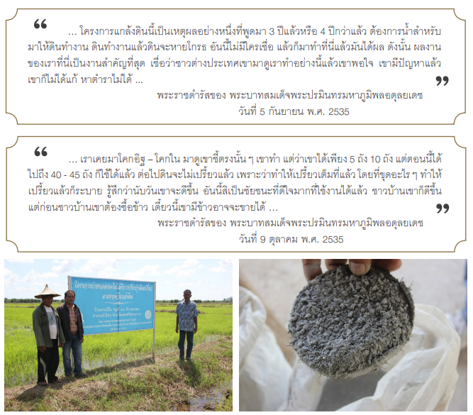

โครงการแกล้งดิน
ปลูกพืชไม่ได้ เนื่องจากดินเปรี้ยว
ตั้งแต่ปีพ.ศ. 2516 เป็นต้นมา พระบาทสมเด็จพระปรมินทรมหาภูมิพลอดุลยเดช ได้เสด็จพระราชดำเนินแปรพระราชฐาน และทรงเยี่ยมเยียนราษฎรในพื้นที่ภาคใต้อย่างสม่ำเสมอ ทำให้พระองค์ทรงทราบว่าราษฎรในพื้นที่จังหวัดนราธิวาส และจังหวัดใกล้เคียง ประสบปัญหาด้านพื้นที่ในการทำการเกษตร ขาดแคลนที่ทำกิน ซึ่งเนื่องมาจากพื้นที่ดินพรุที่มีการระบายน้ำออก ได้แปรสภาพเป็นดินเปรี้ยวจัดจนไม่สามารถปลูกพืชผลทางการเกษตร หรือถ้าจะปลูกพืชผลผลผลิตที่ได้จะลดลงอย่างเห็นได้ชัดเจน จึงมีพระราชดำริให้จัดตั้ง "โครงการศูนย์ศึกษาการพัฒนาพิกุลทอง อันเนื่องมาจากพระราชดำริ" ขึ้น ณ จังหวัดนราธิวาส เมื่อปี พ.ศ. 2524 เพื่อศึกษา ปรับปรุง และแก้ไขพื้นที่ให้สามารถใช้ประโยชน์ทางการเกษตรและอื่น ๆ ได้ต่อมาเมื่อวันที่ 16 กันยายน พ.ศ. 2527 พระบาทสมเด็จพระปรมินทรมหาภูมิพลอดุลยเดช ทรงมีพระราชดำริเกี่ยวกับการแก้ปัญหาดินเปรี้ยวจัดหรือดินกรดกำมะถันโดยทรงแนะนำให้ทำเรื่องแกล้งดิน "...ให้มีการทดลองทำดินให้เปรี้ยวจัด โดยการระบายน้ำให้แห้ง และศึกษาวิธีการแกล้งดินเปรี้ยว เพื่อนำผลไปแก้ปัญหาดินเปรี้ยว ให้แก่ราษฎรที่มีปัญหาเรื่องนี้ในเขตจังหวัดนราธิวาส โดยให้ทำโครงการศึกษาทดลอง ภายในกำหนดเวลา 2 ปี และพืชที่ใช้ทดลองควรเป็นข้าว

อ้างอิง : www.scimath.org